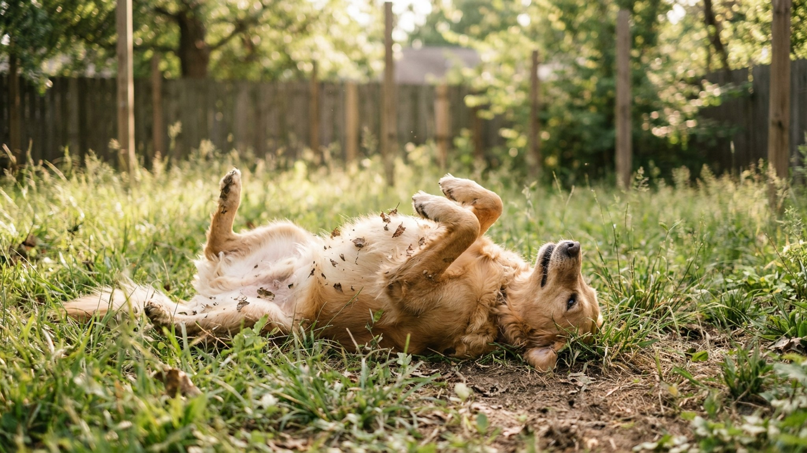

Прогулка шла отлично — пока собака не нашла что-то на газоне и не вывалялась в этом с явным удовольствием. Запах убийственный, вид довольный. Это один из самых стойких древних рефлексов у собак. Три версии учёных, почему они это делают, что точно не поможет и как переключить поведение.
🐾 Экономьте на лишних визитах к врачу
Сначала спросите AI-ветеринара в AnimaLife — часто этого достаточно, чтобы понять, нужен ли визит к врачу.
Поведение валяния в пахучих веществах — научный термин scent rolling — зафиксировано у всех псовых: волков, лис, койотов, шакалов и домашних собак. Это не выдумка, не игра и не попытка испортить вам настроение. За жестом стоит несколько функциональных гипотез, ни одна из которых до конца не доказана, но каждая вполне убедительна.
Классическое объяснение: волк перед охотой заглушает свой запах, нанося на себя запах местности — перегнившей органики, экскрементов другого животного, падали. Это снижает вероятность того, что добыча учует охотника раньше времени.
Для домашней собаки охота давно не актуальна, но нейронная программа осталась. Инстинкт активируется при определённых запаховых стимулах — особенно резких, органических, «живых». Именно поэтому собаки редко валяются в асфальте и часто — в прелой траве, останках животных или экскрементах.
Этолог Пол Пэкет, изучавший волков, предложил другую версию: животное наносит на себя запах найденного источника — пищи, другого животного — и несёт эту «новость» обратно в стаю. Запах на шерсти позволяет сородичам узнать, что было найдено и где.
В домашних условиях эта функция тоже утратила смысл, но рефлекс остался. Особенно характерно для собак, которые живут в социальной группе или часто взаимодействуют с другими животными.
Третья версия проще: это приятно. Катание на спине само по себе — физически приятное действие (массаж спины, расслабление мышц), а сильный запах активирует обонятельные рецепторы в режиме «перегрузки» — своеобразный сенсорный кайф. Собаки делают это с явным удовольствием, часто в расслабленном состоянии после хорошей прогулки.
Все три версии могут быть одновременно верны: поведение закрепилось по нескольким причинам сразу.
Единственный работающий метод — прерывание до начала + переключение на альтернативное поведение + награда за переключение.
Шаг 1: научитесь читать сигналы. Перед тем как лечь на что-то, собака замедляется, опускает нос, начинает крутиться на месте. Это окно для прерывания.
Шаг 2: окликните кличку или подайте команду «ко мне». Если отклик хорошо отработан — собака оторвётся от запаха и повернётся к вам. Немедленно наградите щедро.
Шаг 3: уведите в другое место или запустите другое поведение. Бросьте мячик, включите поисковую игру с лакомством в траве. Нос собаки должен получить другую интересную задачу.
Шаг 4: работайте на длинном поводке в зонах риска. Если прогулка идёт там, где часто есть соблазны — длинный поводок 5–10 м даёт собаке свободу и вам — время отреагировать до контакта.
🐾 Всё о вашем питомце — в одном приложении
AI-ветеринар, дневник, напоминания о прививках и уходе. Установите AnimaLife — это бесплатно, в Telegram и MAX.
🐾 Понравился разбор?
Подпишитесь на канал — каждый день разбираем по одному тревожному симптому у кошек и собак: что в пределах нормы, а когда пора к врачу. Подпишитесь, чтобы не пропустить разбор, который может спасти здоровье вашего питомца.
Да. Собаки с сильно развитым охотничьим инстинктом — гончие, бигли, норные терьеры, хаски — склонны к scent rolling значительно чаще. У них обонятельная система работает «громче», и реакция на запаховые стимулы сильнее.
Если ваша собака выдающийся «валяльщик» — возможно, ей не хватает обонятельных нагрузок в принципе. Нюхательные коврики, поисковые игры, трекинг по запаховому следу — всё это снижает потребность компенсировать обонятельный дефицит на прогулке радикальными методами.
Если собака катается не на улице, а дома — по полу, коврам, вашей одежде — это другое поведение. Такое катание может указывать на зуд (кожа, уши) или дискомфорт. Обсудите с ветеринаром, если наблюдаете это регулярно в домашних условиях без явного источника запаха.
Собака, которая нашла что-то интересное и вывалялась — это нормальная собака с нормальным поведением. Ваша задача — не искоренить рефлекс, а управлять им. Сильный отзыв, альтернативные обонятельные нагрузки и поводок в нужный момент — и прогулки снова станут предсказуемыми.